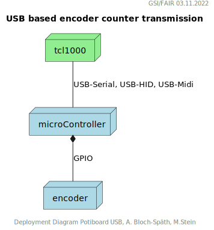
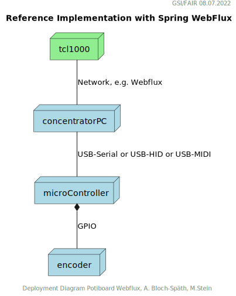
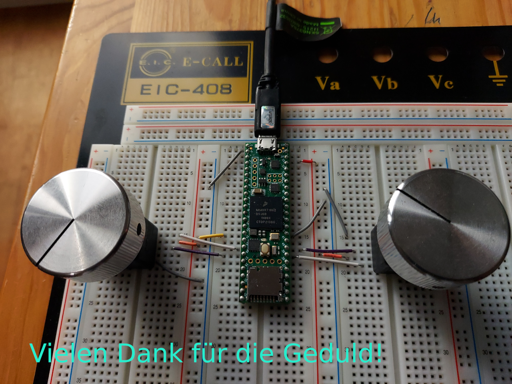

|
|
ACO - Application Support (APS) |
Einbindung dieser Arbeit in das laufende projekt FCC Digital Potiboard
Die hier beschriebene Technologie-Evaluierung dient als Grundlage zur Entscheidungsfindung zu den in der Abbildung: Status FCC Digital Potiboard markierten Major Milestones und Subprojects / Tasks.
Figure 1. Status FCC Digital Potiboard
Rückblick und Motivation
Der vor ca. 6 Jahren entwickelte Potiboard-Prototyp wurde in einem der vergangenen Potiboard-Meetings als unzureichend in seiner Technologieauswahl eingestuft. Insbesondere der Einsatz einer "closed source library" des benutzten Phidget-Mikrocontroller, der zur Verarbeitung der Encodersignale dient, wurde kritisiert. Dessen Treiber läuft zudem nicht im "Userspace" auf dem zu benutzenden Linuxderivat, was aus system-administrativer Sicht ein Nachteil ist.
Eine weitere Anforderung der Zukunft (FCC) könnte sein, dass die Drehgeber ihre Inkremente an eine Potiboard-App über eine nicht unerhebliche Entfernung übermittelt werden müssen. Diese Anforderung wurde beim alten Potiboard-Prototyp über eine hohe Integration der beteiligten Komponenten gelöst. Drehgeber wie Potiboard-App, gesteuert über einen Touchscreen, befanden sich in einem Gehäuse mit Netzwerkanschluss.

Skizze des neuen Potiboard-Encoder-Device
Funktionsüberblick aus der Spezifikation
Button functions are:
scroll back and forth (per button press by 4 devices to the right or left. In case of individual assignment, move one device to the right or left)
deactivate the encoders (deactivation deselects all devices and triggers the LSA data supply)
change the parameter view ⇒ volts, BRHO et cetera
activate and deactivate the master mode (first partner knob controls both devices, second (third, fourth) partner is ignored
change the increment
— Spezifikation: F-FO-CMD-en-0009_DS_Potiboard_v4_inprogress.docx
Vom alten Potiboard-Prototyp übernommende Technologieentscheidungen und neue Wege
-
Optische "Rotary Quadrature Encoder" wurden wieder wegen ihrer Signalqualität, Zuverlässigkeit und Verfügbarkeit eingesetzt. Auf kugelgelagerte Modelle wurde diesmal verzichtet (Haptikgründe wegen zu hoher Leichtgängigkeit).Merkmale sind 16-128 Pulse pro 360-Rotation, keine Zahnung, 5 V. 3.3V Modelle waren auf dem Markt nicht erhältlich.
-
Beispiel-Encoder sind:
-
Grayhill 63R128, Stückpreis: 100 $
-
Bourns ENA1J-B28-L00128L, Stückpreis:60 $
-
-
Durch den Einsatz von modernen Mikrocontrollern, deren Spannung an ihren I/O Kanälen häufig auf 3,3 V limitiert ist (anstatt 5V), schränkt sich dich Auswahl der möglichen Endcoder-Modelle deutlich ein. Eventuell müssten die Encoder-Ausgangsspannungen an den Eingängen der Mikrocontroller mit Pegelumsetzern (Level-Shifter) angepasst werden, wenn 5 V Encoder-Modelle eingesetzt werden müssen.
-
Es wurden wieder Mikrokontroller evaluiert, die die Inkremente der bis zu acht (8!) Encoder, ohne spürbare Zeitverzögerung, weiterverarbeiten können sollen. Statt des im alten Prototypen verwendeten Phidget-Mikrocontroller (1047) wurden folgende Mikrocontroller stattdessen betrachtet:
-
Raspberry Pi 4, Stückpreis: 70 $
-
STM32H7, STM32F7, Stückpreis: 70 $
-
Teensy 4.1 (Arduino kompatibel), Stückpreis: 40 $
-
Raspberry Pi Pico, Stückpreis: 8 $
-
Alle Systeme stellen nachbaubare Hardware dar (Ersatzteilversorgung scheint gesichert) und lassen sich mit Open-Source Software betreiben. Pro Einheit bewegen sie sich in einem Kostenrahmen von 6-80 US $. Der Mikrocontroller-Code zur Weiterverarbeitung der Encoder-Inkremente muss bzw. musste in C, Python oder Assembler geschrieben und gewartet werden. Das gleiche gilt für die verschiedenen Übertragungtechnologien zur Java-basierten Potiboard-Applikation.
Generelle Hardware-Komponenten-Architekturüberlegungen
Komponentengruppen
Inkrementzähler-Übertragung über Netzwerk oder USB

|
|
USB Nachteil
USB ist auf eine maximale Kabellänge von 5m spezifiziert. Mit guten Kabel und/oder Repeatern sind vielleicht bis zu 10m möglich.
|
|
USB Vorteil
USB ist prinzipiell schneller, die Protokolle haben keinen Adressierungs-Overhead.
Vieles ist dadurch einfacher, z.B. müssen Sender (Potiboard) und Empfängeradresse (Potiboard-App) nicht konfigurierbar programmiert werden.
|
|
USB Vorteil
USB liefert out of the box ausreichend Strom für Drehgeber und Mikroprozessor. Beim Netzwerk müßte zusätzliche Hardware (z.B. PoE) hinzugefügt werden, wenn ein Stromnetz-Anschluss vermieden werden soll (USB als nur zum Stromanschluss ginge natürlich auch).
|
Netzwerkbasierte System-Architekturen und Technologien
Testsystem mit Spring Webflux

Figure 2. UML-Komponenten Diagram Netzwerkübertragung with
Spring Webflux
Figure 3. Test-Implementation 1
Es wurde ein Referenzsystem, wie im oberen Bild dargestellt, auf Basis eines Teensy 4.1 Mikrocontrollers entwickelt, der die Inkremente der Encoder in hoher Geschwindigkeit bis in eine Beispiel-JavaFX-Applikation weiterreicht.
Die im Referenzsystem eingesetzte Datenübermittlungstechnologie basiert auf der Technologie Spring Webflux und dem "Reactive Toolkit" Project Reactor. Sie wurde ausgewählt, da sie der "GSI Controls Applicationsservice-Technologieauswahl" entspricht, die für die Operating-Applikationen im FCC und HKR eingesetzt werden soll und teilweise schon eingesetzt wird.
Ein Nachteil und in mancherlei Hinsicht sicher auch Vorteil dieser Architektur ist die Einführung eines java-basierten Webflux-Servers (siehe Bild EncoderPositionsServerPC), der ein PC-System mit Controls-konformen OS sein sollte. Es ist also eine Schicht (Tier) notwendig, um die Inkremente der verschiedenen Encoder im WebFlux-Format zu versenden.
Auf der Habenseite dieser Architektur steht die Anpassbarkeit und Wartbarkeit nach den Richtlinien der Controls-Abteilung und damit eine sichere, kontrollierbare Netzwerkkommunikation im ACC-Netzwerk auf lange Sicht und keine Insellösung im ACC-Netz.
Eine vereinfachte Architektur könnte den Einsatz eines weiteren Rechners, wie der des Konzentrator-PCs, eingesetzt für als Webflux-Server, überflüssig machen. Die Instandhaltung des Rechners so wie die Wartung des Betriebssytems (z.B. Rocky Linux) erzeugt wiederkehrende Kosten. Deshalb wurden weitere netzwerk-basierte Technologien in Betracht gezogen.
Testsysteme mit ZeroMQ und MQTT
Test-Implementation 2
Ein Kanditat für eine einfachere Architektur ist zum Beispiel die Technologie ZeroMQ, die sich mit einem Raspberry Pi 4, wie getestet, leicht einsetzen läßt.
Sehr interessant ist auch die MQTT-Technologie, die allerdings die Notwendigkeit des Aufsetzens eines MQTT-Servers nach sich ziehen würde und somit den Vorteil der Kostenersparnis zumindestens teilweise wieder verliert.
USB-basierte System-Architekturen und Technologien
Testsystem mit USB-Serial
Mikroprozessor-Seite
Die USB-Serial Übertragung wurde hauptsächlich vom Mikroprozessor Teensy 4.1 aus getestet, da dieser auch für den netzwerk-basierten Test mit Spring Webflux zum Einsatz kam. Es wurde die Standard Arduino Bibliotek Arduino.h für das Schreiben auf der USB-seriellen Schnittstelle eingesetzt.
Java-Applikationsseite
Es wurde die gut gepflegte und verbreitete Java-Bibliothek jSerialComm genutzt um die seriellen Datenpakete in der Potiboard-Applikation zu empfangen.
Administration, Konfiguration
Administrationsaufwand ergibt sich für die Java-Applikationsseite auf Linux-Systemen, z.B. auf den tcl100-Maschinen, die Notwendigkeit einer Rechtevergabe für den user, um unter Linux Zugriffrechte auf die Serielle Schnittstelle zu bekommen.
sudo usermod -a -G uucp username
sudo usermod -a -G dialout username
sudo usermod -a -G lock username
sudo usermod -a -G tty usernameTestsystem mit USB-HID
Mikroprozessor-Seite
Wieder kam der Teensy 4.1 zum Einsatz, diesmal mit einer Teensy-speziellen Bibliothek USB Host Library for Teensy 3.6 and 4.0. Mit dieser können USB-HID konform "Rohdaten" bis zu einer Länge von 64 Byte (und pro Millisekunde) in einem Datenpaket übertragen und empfangen werden.
Java-Applikationsseite
Auf Java-Seite setzte sich eine sehr leichgewichtige Bibliothek durch, die Pure Java HIDApi. Sie bekam den Vorzug zur HID4Java, die eine C-Bibliothek als Abhängigkeit benötigt.
Administration, Konfiguration
Administrationsaufwand ergibt sich für die Java-Applikationsseite auf Linux-Systemen, z.B. auf den tcl100-Maschinen, die Notwendigkeit einer UDEV-Regel, z.B. in einer Datei 66-hid-rules im Verzeichnis /etc/udev/rules.d:
KERNEL=="hidraw*", ATTRS{idVendor}=="16c0", ATTRS{idProduct}=="042", MODE:="0666"
SUBSYSTEMS=="usb", ATTRS{idVendor}=="16c0", ATTRS{idProduct}=="042", MODE:="0666"Testsystem mit der USB-MIDI
Mikroprozessor-Seite
Auch hier kam der Mikroprozessor Teensy 4.1 in einem erfolgreichen Test zum Einsatz und wieder reichte, wie beim USB-Seriellen Weg, die Standard Arduino Bibliotek Arduino.h, diesmal für das Schreiben auf der USB-MIDI-Schnittstelle.
Java-Applikationsseite
Die Potiboard-Applikation kann die MIDI-Daten in ihrem Java-Code ohne zusätzliche Abhängigkeiten empfangen MIDI direkt von der JRE unterstützt durch die Java Sound API.
Administration, Konfiguration
Keine Notwendigkeiten unter Linux.
Bemerkung
Um größere Datenlängen in einem Datenpaket zu verschicken (> als zwei Byte), müssen sogenannte Sysex, oder MIDI system exclusive messages benutzt werden.
Bei dieser Art von Nachrichten sind mehr als drei Byte Datenpaketlänge erlaubt.
Allerdings können in einem Byte nur 7 Bit genutzt werden, so dass Konvertierungen vom 8-Bit-System in 7-Bit-System und zurück im Code sowohl auf Mikroprozessor-Seite (`C), als auch auf Java-Applikationsseite notwendig sind.
Grundlegende zentrale Anforderungen (Stichwortliste)
-
Komplexität, Lebensdauer und Wartbarkeit der Hardware
Die Funktion der eingesetzten Drehgeber und Mirkocontroller muss durch Verfügbarkeit am Markt oder durch Reserveteile-Einlagerung für möglichst mehrere Jahrzehnte mit finanziell überschaubarem Aufwand absicherbar sein. Komplexe Systeme oder eine hohe Anzahl von verschiedenen benötigten Hardwarekomponenten sollte wenn möglich vermieden werden.
-
Komplexität, Lebensdauer und Wartbarkeit der Software
Die eingesetzte Software auf Mikrocontroller und auf Potiboard-Applikationsseite sollte aus möglichst gut gepflegten und verständlichen Open-Source Projekten mit hoher Verbreitung stammen. Dies kann auch Auswirkungen auf die Wahl des Mikrocontrollers haben. Der notwendige selbst geschriebene Soure-Code sollte möglichst einfach wartbar sein. Auf dem Mikrocontroller kommen die Programmiersprachen Assembler, C und Python in Frage, auf der Potiboard-Applikationsseite werden Java-basierte Lösungen preferiert.
-
Administrations-, Konfigurationsaufwand
Der Aufwand für zusätzliche Hardware und Software, wie z.B. der KonzentratorPC für Webflux oder ein MQTT-Server(Linux-Administration, Hardwarepflege) oder zusätzliche Stromversorgungswege als auch der Aufwand für Konfigurationen (Netzwerk-Adressen-Pflege) sollte minimal gehalten werden. Unter diesen Punkt fallen auch notwendige Linux-Anpassungen z.B. auf den tcl100 Rechnern für den HKR.
-
Geschwindigkeit der Signalübertragung der Inkremente der Encoder
Die vom Nutzer über den Drehgeber zum Mikrocontroller und dann in das Java-Programm sollte zwischen max. bei 10 ms (100 Hz) liegen, besser deutlich niedriger.
-
Duplex-Signalübertragung, nicht nur für die Inkremente der Encoder in eine Richtung, sondern auch in der Gegenrichtung von der Portiboard-App zurück zum Potiboard-Encoder-Device.
Um die Benutzererfahrung am Potiboard-Encoder-Device zu verbessern, sollte es technisch möglich sein, Informationen wie Status der Verbindung, oder auch Magnet-Nomenklaturen an das Potiboard-Encoder-Device zu übertragen.
Tabelle Technologiebewertung
| Eigenschaft — Technologie | USB | Netzwerk | Hardware | Software | Administration | Geschwindigkeit | Duplex | ∑ * |
|---|---|---|---|---|---|---|---|---|
Webflux |
X |
* |
** |
* |
** |
*** |
9 |
|
MQTT |
X |
* |
* |
* |
** |
*** |
8 |
|
ZeroMQ |
X |
** |
** |
** |
** |
*** |
11 |
|
Socket |
X |
** |
** |
** |
*** |
** |
11 |
|
USB-Serial |
X |
*** |
*** |
** |
*** |
** |
13 |
|
USB-HID |
X |
*** |
** |
** |
** |
** |
11 |
|
USB-MIDI |
X |
*** |
*** |
*** |
* |
* |
11 |
|
RS232/RS485 |
- |
|||||||
MIDI (DIN) |
- |
|||||||
X = gehört zu, - = ungenügend, * = ausreichend , ** = gut, *** = sehr gut |
||||||||
Die Tabelle dient nur als Diskussionsgrundlage für die verschiedenen Technologien. Für einen Vergleich wären die verschiedenen Eigenschaften (Spalten) zu gewichten. Die ∑ * Spalte dient nicht der objektiven Bewertung;
Fazit
Wenn USB als Datenübertragungssystem für Potiboard-Prototypentwickungen vorerst als ausreichend bewertet wird, wäre der technische Vorschlag, für den ersten Protoypen die Encoder-Signale mit einem Arduino kompatiblen Mikrocontroller der Art Teensy 4.1 zu verarbeiten und von diesem aus die Inkrementzählerwerte über das USB-MIDI-Protokoll an die java-basierte Potiboard-Applikation weiterzuleiten.
| Der Teensy 4.1 ist ein kosteneffizienter, gut verfügbarer und hoch performanter 600 MHz ARM Cortex M7 Mikrocontroller. Seine über die Arduino-IDE leicht einbindbaren Open-Source Bibliotheken sind verbreitet und gut unterstützt Die in den Tests eingesetzten Bibiotheken für Encoder sowie die USB-Serial-, USB-HID- und USB-Midi Bibliotheken funktionierten schnell und problemlos. |
Das USB-Midi Protokoll bietet als einzige USB-Datenübertragungstechnologie echtes Plug-and-Play an einem Linux-basierten Host (wie z.B. TCL100).
Auf der Java-Seite, also bei der Entwicklung und Wartung der Potiboard-Applikation, wird MIDI direkt von der JRE unterstützt durch die Java Sound API. D.h. es werden wahrscheinlich nie zusätzliche Bibliotheken oder Abhängigkeiten einzubinden sein.
Diesen Vorteilen stehen gegenüber eine leicht erhöhte Komplexität bei der Programmierung der Übertragungsdatenpakete und eine niedrigere aber noch ausreichende Datenübertragungsrate.
|
Wenn USB als Datenübertragungssystem als möglicherweise nicht ausreichend bewertet wird, müsste die Evaluierung der netzwerk-basierten Technologien weitergeführt werden. Eine rein socket-basierte Verbindung von einem netzwerk-fähigen Mikrocontroller zur java-basierten Potiboard-Applikation wäre ein begehbarer Weg oder eine auf das ZeroMQ-Messaging basierende Übertragung zwischen Mikrokontroller und der Potiboard-Applikation..

Annex
-
GPS-System zur Uhrensynchronisation für Zeitmessungen mit ~ 30 µs Genauigkeit
-
7-Bit Arithmetische Kodierung zur Darstellung von Datentypengrößen größer als 7 Bit (>127) (MIDI-Anforderung)
-
Nutzung der
State Machinefür den GPIO-Verkehr zur Vermeidung von CPU-Interrupts beim Raspberry PI Nano